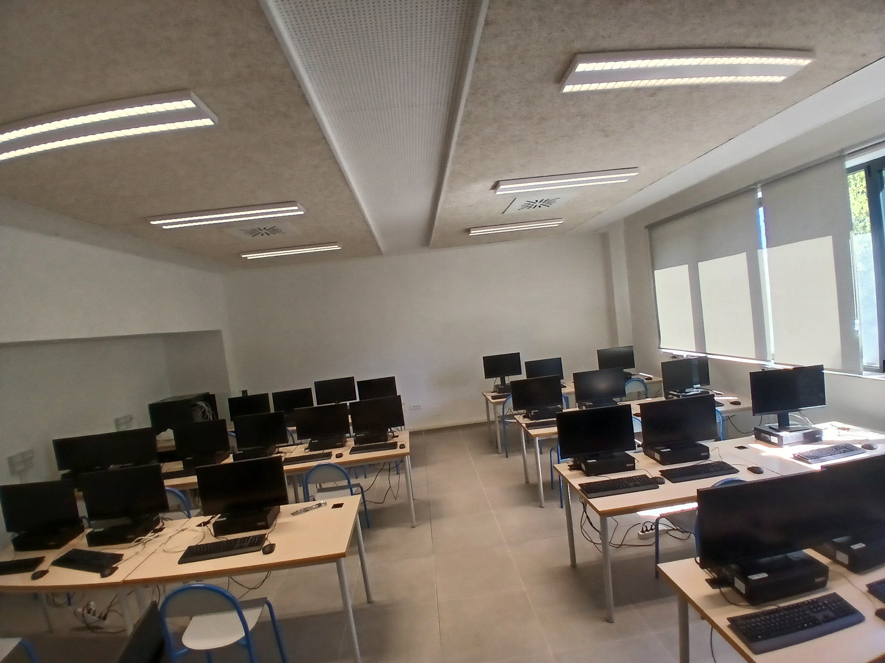
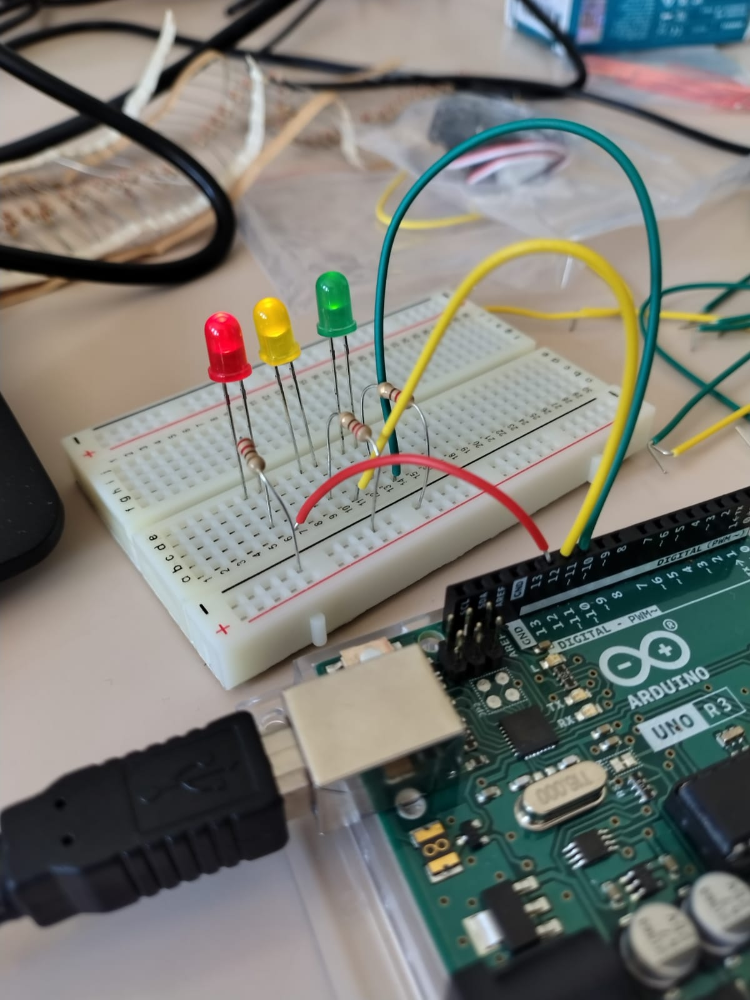

FSL
La scuola: Istituto Comprensivo Jesi San Francesco — Scuola Secondaria di Primo Grado "Lorenzini"
Ho svolto la mia FSL in un posto non convenzionale per chi studia informatica: la Scuola Media "Lorenzini" di Jesi, parte dell'Istituto Comprensivo Jesi San Francesco. Non in un'azienda software, non in uno studio tecnico — in una scuola. All'inizio poteva sembrare meno "professionale" rispetto ad altri contesti. Alla fine è stata una delle esperienze più concrete e complete che potessi fare.

Prima fase — Fine quarto anno: tecnici del laboratorio
Io e un mio compagno di classe siamo stati inseriti come tecnici del laboratorio informatico della Lorenzini. Il lavoro consisteva nella gestione ordinaria: assistenza alle postazioni, supporto durante le ore di laboratorio, risoluzione dei problemi tecnici quotidiani. Per la prima volta mi sono trovato dall'altra parte: non più studente che usa un laboratorio, ma la persona che lo fa funzionare per gli altri.
Ho capito in fretta che la differenza tra un ambiente scolastico e uno "da manuale" è che i problemi reali non arrivano uno alla volta, non sono sempre chiari, e spesso hanno soluzioni che non si trovano sui libri. Ho imparato a non farmi prendere dal panico, a ragionare con calma e a chiedere quando ne avevo bisogno — una cosa più difficile di quanto sembri.

Seconda fase — Inizio quinto anno: il trasferimento nel nuovo edificio
Tra la prima e la seconda fase c'era stato un cambiamento importante: la Lorenzini si era trasferita in un nuovo edificio. Quello che ci aspettava, quindi, non era la gestione di un laboratorio già funzionante, ma la sua costruzione da zero.
Abbiamo lavorato su due fronti. Il primo, hardware: cablaggio delle postazioni, installazione delle periferiche, verifica dei collegamenti di rete. Il secondo, software: configurazione dei sistemi operativi, installazione dei programmi necessari alle attività didattiche, impostazione delle regole di accesso e degli account utenti. Un lavoro sistematico, che richiedeva metodo e attenzione ai dettagli — un errore in fase di configurazione si sarebbe poi ripercosso su ogni studente che usava quella postazione.

Quello che ho portato a casa
Ho portato a casa la conferma che quello che si studia in classe ha senso nella realtà. Il subnetting, la gestione degli account, le politiche di accesso: cose che a scuola rimangono spesso astratte, lì erano problemi concreti con conseguenze concrete. Ho anche capito qualcosa di più sul lavoro in coppia: non è solo dividere i compiti, è sapersi coordinare, darsi feedback e coprire le lacune dell'altro.
Ma la cosa che ricordo di più è la sensazione, alla fine, di lasciare un laboratorio che funzionava. Qualcosa che avevamo costruito noi, che avrebbe usato qualcun altro. È una soddisfazione diversa dal prendere un bel voto.